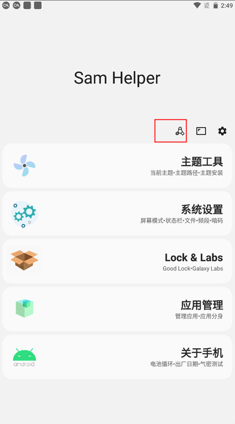
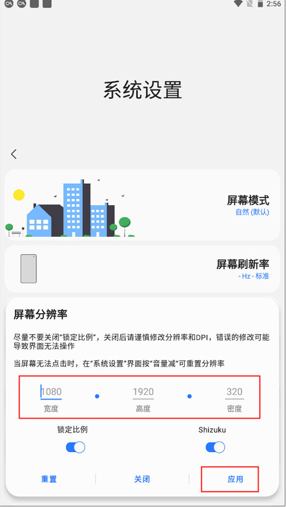

Sam Helper 版本进化史：一款围绕 Knox 红线构建的三星工具
从基础信息查询到 Shizuku 高级授权，Sam Helper 的每一步迭代都在同一个约束下跳舞——不碰 Root、不触发 Knox 熔断。
现在打开 Sam Helper，你会看到一个按权限层级组织起来的功能矩阵——它的官网上也能找到完整的功能清单：最上面是设备信息速查，中间是系统暗码入口和 Good Lock 管理，最底下是修改分辨率、控制系统参数这类需要 Shizuku 或 ADB 授权的高级功能。整个应用的界面逻辑像是在画一张地图——告诉你哪些地方是安全的、哪些地方需要额外通行证、哪些地方干脆不能碰。
我翻了一下 Sam Helper 的文档，官方没有把版本时间线单独列出来。但从它的功能依赖关系和权限设计里，能反推出它走过的路。
从一枚"系统暗码快捷方式"起步
最早的 Sam Helper 应该是个很朴素的东西——把三星系统里藏着的那些暗码入口整理到一个界面里。你知道的，在拨号界面敲 *#0228# 可以进电池服务模式，*#06# 看 IMEI，这些是三星工程师留下的隐藏通道。问题是暗码太多、不好记，三星换一个系统版本就可能改一两个，普通用户根本摸不清。
所以 Sam Helper 的第一波功能其实就是一个"暗码通讯录"：你点开它选电池服务，它帮你跳过去，不用手动输那串星井号。这类功能完全不需要任何特殊权限，普通存储权限就够了——早期版本可能连 Shizuku 是什么都没出现。
但光做快捷方式有个天花板。三星系统里还有好多东西，比如气密性测试、出厂日期、Knox 状态，这些是公开 API 拿不到的，暗码也不一定覆盖得到。Sam Helper 的第一转折点应该就是从"帮你输暗码"变成"直接读系统属性"——它开始绕过拨号程序，用更直接的方式去调三星的系统接口。

Knox 红线：所有迭代的设计前提
Sam Helper 从官方下载就能拿到，它的核心设计哲学从来不是"能做多少事"，而是"在不触发 Knox 的前提下能做多少事"。这条线是所有功能迭代的前提。
三星的 Knox 平台从芯片级开始构建安全链，一旦检测到设备被 Root 或刷入非官方固件，就会把融合位从 0 改成 1——这个过程不可逆。后果很严重：保修失效、Samsung Pay 不能用、很多银行类应用直接闪退。对于一个面向普通用户的工具来说，踩 Knox 红线等于自废武功。
所以 Sam Helper 从某个版本开始，所有新功能都先过一道关：能不能在系统权限边界内完成？能就做，不能就不做。这个决策在权限排查文档里体现得非常清晰——它把权限分成四层：普通权限、特殊权限、Shizuku/ADB 系统权限、Root 权限，并且明明白白告诉你：Root 是可选的、不推荐的、会触发 Knox 的。
Shizuku 方案的引入：高级功能的突破口
真正让 Sam Helper 从"小工具"变成"实用工具"的，是 Shizuku 方案的引入。
Shizuku 本身不是 Sam Helper 开发的，它是 Android 社区里的一个权限代理——通过 ADB 或无线调试通道，把原本只有 shell 用户才能调用的系统 API 授权给第三方应用。关键点在于：Shizuku 不触发 Knox。因为它本质上还是在 Android 系统的调试接口范围内，不是直接修改系统分区。
有了 Shizuku 这层桥梁，Sam Helper 能做的事一下多了一个量级：修改屏幕分辨率、控制系统动画速度、调整锁屏设置——这些以前需要 Root 的操作，现在用 Shizuku 授权就能实现。文档里那个权限层级图完美对应了这个演进路径：高级功能从 Root 权限层挪到了 Shizuku/ADB 层，离 Knox 红线更远了。

Good Lock 生态的对接
Sam Helper 的另一个迭代方向是对接三星自己的 Good Lock 生态。Good Lock 是三星官方出的一套系统定制模块，但它的设置界面又深又散——每个模块各自为政，想调个图标包要跳三四层菜单。Sam Helper 把 Good Lock 的主要功能入口整合到自己的界面里，相当于给 Good Lock 做了一个"聚合仪表盘"。
这一步有意思的地方在于：它不是去"破解"Good Lock 的功能，而是去"调用"Good Lock 的官方 API。也就是说，Sam Helper 在这件事上完全站在三星给的接口里做事，连 Shizuku 都用不上。这种克制反而让它在系统更新后的兼容性特别好——三星改 Good Lock 的内部实现时，Sam Helper 跟着适配 API 就行，不用重新逆向。
它一直在死磕什么，什么一直没碰
从 Sam Helper 的迭代节奏里能看出一个很稳定的优先级：先做"看得见"的，再做"改得动"的，永远不碰"得 Root 才做得动"的。
"看得见"是设备信息类功能：电池电压温度、出厂日期、Knox 状态、气密性测试、硬件版本。这些功能的共同特点是只读、安全、对用户决策有参考价值（尤其是二手验机场景）。Sam Helper 在这块做得很细，电池服务模式里甚至给了电压和电量百分比的对照表——这明显是在帮用户做"电池健康自检"，而不只是把数字甩给你。
"改得动"是 Shizuku 层的高级功能：分辨率、动画、系统设置。这块 Sam Helper 明显更谨慎——每增加一个需要 Shizuku 授权的功能，文档里都会补充完整的权限说明和修复清单。
那什么一直没碰？Root 相关的操作、系统分区的修改、绕过 Knox 的尝试。Sam Helper 的文档在这些地方给你的建议永远是"别做"。甚至连 Magisk 模块管理这种社区常见的需求，Sam Helper 也没做——不是技术上做不到，是它不想走到那一步。
从迭代规律推下一步
如果 Sam Helper 继续按这个思路演进，下一步大概率会往两个方向走。
一个方向是把 Shizuku 层做深——现在需要 Shizuku 授权的功能还集中在显示和动画这块，系统设置里还有不少参数可以暴露出来。但每加一个功能都要先确认"这会不会触发 Knox"，所以节奏不会快。
另一个方向是继续补"看得见"的功能——更深的硬件自检、更细的系统信息读取、更好的二手验机辅助。这块的边际成本低，而且永远在安全边界内，是 Sam Helper 最稳妥的迭代方向。
当然这些都是从它自己的历史里推的，不是官方路线图。但一个工具如果能在同一个约束下迭代好几年，本身就说明它找对了位置——不是跟系统作对，而是在系统给的空间里把事情做到极致。